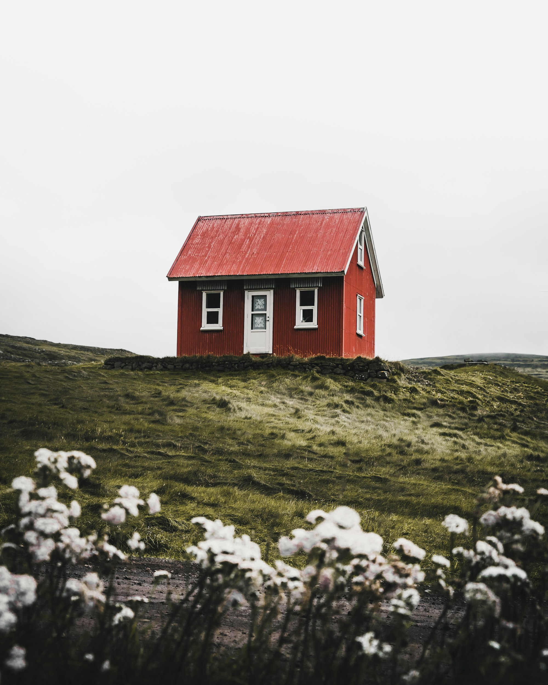

导航

按行政村（社区）登记可接待户数与单次接待能力，价格只给区间、不列店名。 这是调研过程中的初步台账，不是订房渠道。
广东省韶关市新丰县黄磜镇 资料来源：调研团队 2025 年 7 月实地摸排 更新于 2026 年 10 月
数据来源：调研团队2025年7月实地摸排，以下为初步统计
| 村名 | 可接待户数 | 单次接待能力（人） | 参考价格区间 | 备注 |
|---|---|---|---|---|
| 雪峒村 | 12 | 60 | ¥80-200（农家乐）/ ¥200-500（精品民宿） | 高山茶园核心区，农户自营为主；旺季需提前电话确认 |
| 茶峒村 | 9 | 45 | ¥80-200（农家乐）/ ¥200-500（精品民宿） | 茶园民宿相对集中，接待条件较好 |
| 营盘村 | 5 | 24 | ¥80-200（农家乐）/ ¥200-500（精品民宿） | 海拔较高，夏季避暑需求为主，夜间温差大 |
| 梁坝村 | 6 | 30 | ¥80-200（农家乐） | 客家围屋聚落，多为村民闲置房改造 |
| 高群村 | 4 | 20 | ¥80-200（农家乐） | 红色研学线路配套，接待能力有限 |
| 黄沙坑村 | 3 | 15 | ¥80-200（农家乐） | 位置较偏，需自驾抵达，待进一步摸排 |
| 黄磜圩镇（社区） | 8 | 40 | ¥80-200（农家乐）/ ¥200-500（精品民宿） | 镇区配套，餐饮、停车与客运相对便利 |
| 合计（7 个村 / 社区） | 47 | 234 | 初步统计，逐村复核中 | |
正式开业民宿信息请关注"云上黄磜"小程序后续上线
黄磜镇可接待住宿的村不多，条件叠加太细容易空手。
建议先放宽价格上限，或者直接问问我们 —— 有些房源没登记进台账。
点「放宽筛选条件」会清空全部筛选，你的搜索词会保留。
示意图只标出各村（社区）大概方位与可接待户数，点击气泡可跳到摸底表对应行。 黄沙坑村位置较偏，未在本图标注；自驾导航请以路牌与「黄磜镇客运站」为基准点。
怎么去
广州出发约 2 小时 40 分（大广高速 → 新丰出口），韶关市区约 1 小时 30 分。 镇内景点与住宿之间普遍需要开车，无车会很不方便。
乘至「韶关站」或「新丰站」，转乘客运班车到新丰县城（距黄磜 23 公里）， 再从县城打车或预约民宿接站。
广州、韶关均有班车抵达新丰县汽车客运站，站内有发往黄磜圩镇的班次， 班次较少，建议提前电话确认时刻。
住下之后
Wish Pool
选一个季节留下期待，旺季房源紧张，我们会按留言提醒你。